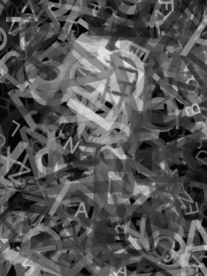
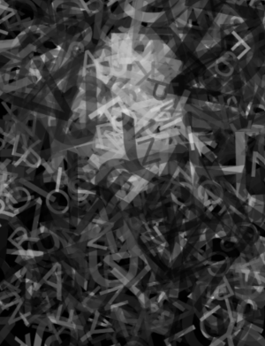
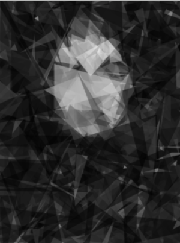
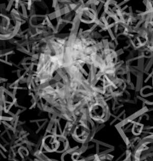
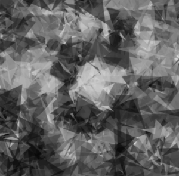

Experiment 5 - Con"text"ual image generator
Mutation rate (%):
Active score:
Exploration rate: fps
Best score:
A few fun images generated
    Description
The triangles builds images the best, the text is the most interesting. If you want
more interesting shapes higher mutations are better. If you want to lock in the colors
lower mutation rates allow the shapes time to figure out what color they want to be
Technical
It uses gaussian mutations on literally every parameter of the shapes, width, height,
position, rotation are all mutated. For text, it's simplified since you can't adjust
text width or height, it only uses width to modify the size and color of the text,
with a mutator placed on the text character instead, constrained between A and Z.
Reflection
The text version almost crashed my laptop, the emoji variant definetly did, so I was forced
to remove the emoji one, but I did manage to get one picture of it in my design doc!
Here's a link to the pdf! Explore the guts!